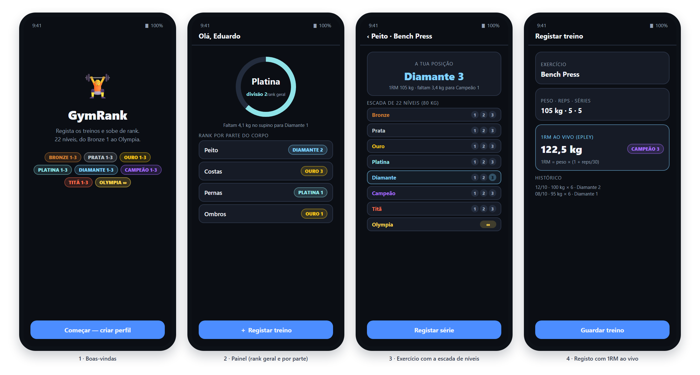
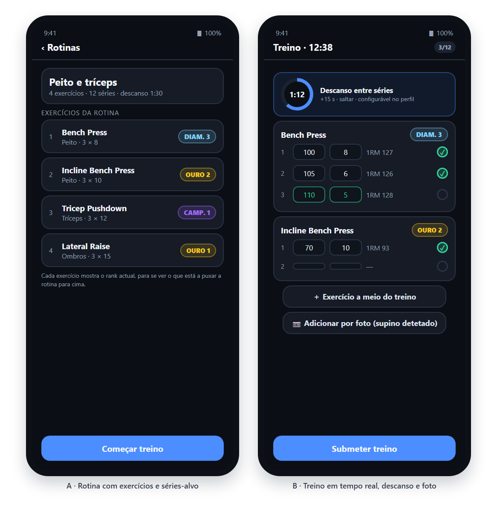

A GymRank é uma app iOS para treinar no ginásio com ranks de videojogo: Bronze Prata Ouro Platina Diamante Campeão Titã Olympia. O treino organiza-se em rotinas (conjuntos de exercícios com séries e repetições-alvo) que se iniciam e acompanham em tempo real, série a série. Cada exercício, cada parte do corpo e o corpo inteiro têm um rank relativo ao peso do utilizador, com 1RM estimado ao vivo e o próximo objectivo em kg — o que responde à perda de aderência das apps de registo, que devolvem números sem significado. A app pede obrigatoriamente idade e peso no primeiro arranque: o peso define a população de comparação e a idade ajusta os limites.
Nativo em iOS (Swift/SwiftUI), plataforma diferente da do projecto de grupo (Android/Kotlin+Compose), como o enunciado exige. SwiftUI para a interface declarativa, SwiftData para persistência local (perfil, catálogo, rotinas, sessões), motor de ranks isolado e testável, cliente wger com async/await e cache offline. A identificação de máquinas por fotografia usa o classificador de imagens do sistema (Vision, VNClassifyImageRequest): corre no dispositivo, sem modelo treinado à parte. Verificação por XCTest (motor, temporizador, mapeamento de etiquetas) e XCUITest dos fluxos num simulador de iPhone por CI macOS, porque o desenvolvimento é em Windows.
NavigationStack. Consulta (1–5), treino (6–10): a rotina abre uma sessão que grava cada série e devolve o rank actualizado.| Prior. | Funcionalidades |
|---|---|
| P0 | Perfil (idade, peso e descanso padrão) · catálogo wger com cache offline · rotinas com exercícios, séries e repetições-alvo (CRUD completo) · treino em tempo real a partir da rotina, com peso e repetições por série, 1RM ao vivo, adicionar exercícios a meio e submeter · timer de descanso configurável · rank por exercício, por parte e geral. |
| P1 | Adicionar exercício por fotografia da máquina, com sugestão a confirmar · histórico de sessões com volume e duração · gráficos de progresso · percentil («mais forte que X%») · acessibilidade (Dynamic Type, VoiceOver, tema claro/escuro). |
| P2 | Exportação CSV/JSON e cartão de rank partilhável · notificações locais. |
Rotina. Uma rotina guarda o nome e uma lista ordenada de exercícios, cada um com séries, repetições-alvo e descanso. Ao tocar em Começar treino a app cria uma sessão e uma linha por série-alvo, já no modelo persistente — o ecrã de treino edita directamente essas linhas, por isso o valor fica gravado à medida que é escrito, mesmo que a app seja fechada a meio.
Durante o treino. Cada série tem peso e repetições; ao marcar a série como concluída o 1RM é recalculado e arranca o descanso (30–180 s, definido no perfil, com +15 s e saltar). O botão + Exercício abre o catálogo e acrescenta séries no fim da sessão, sem perder o que já está registado. Submeter converte as séries concluídas em registos do histórico e recalcula os ranks de exercício, parte e corpo.
Por fotografia. Tirar (ou escolher) uma foto da máquina corre o classificador do sistema, que devolve etiquetas como barbell, bench press machine ou lat pulldown; essas etiquetas são mapeadas para os exercícios do catálogo e a app mostra até três sugestões com a confiança, que o utilizador confirma ou corrige. A câmara só existe em dispositivo real — no simulador usa-se a fototeca, com o mesmo caminho de código.


GymRank-1…8-*.png).| Fonte | Uso |
|---|---|
| wger REST v2 | Catálogo de exercícios (nome, categoria, músculos, equipamento). API pública sem chave; consulta real: 860 exercícios, 8 categorias, 15 músculos. Licença CC-BY-SA 4.0 com atribuição na app. |
| Strength Level | Limiares de rank por exercício, sexo e peso corporal. Sem API pública: dados de referência convertidos num pacote de limiares empacotado. Edição 2026: 287 exercícios, 195,5 M levantamentos de 27,9 M utilizadores. |
| Vision (iOS) | Classificação de imagens no dispositivo para identificar a máquina; sem chave e sem enviar fotografias para fora. |
Os cinco limiares publicados (Beginner…Elite = mais forte que 5/20/50/80/95%) são as âncoras: dois pontos intermédios dão os oito ranks e cada um dos primeiros sete é dividido em três divisões iguais (Bronze 1 a Titã 3 = 21 níveis). O Olympia é nível único e pontuado: entra-se com 1000 pontos no limiar de Elite e ganha-se +1000 por cada duplicação do 1RM, sem tecto. Os limites escalam com o peso (limiar_ref × (peso/72)^b, 68 kg nas mulheres, b ajustado por regressão) e com a idade (18–24: 0,95 · 25–34: 1,00 · 35–44: 0,95 · 45–54: 0,88 · 55–64: 0,78 · 65+: 0,65). Agregação: cada posição vale 0–21 mais a fracção na divisão; a parte é a média dos seus exercícios e o rank geral a média das partes com dados.
Exemplo (homem, 80 kg, 24 anos, supino): limites 47,7 · 68,1 · 80,7 · 93,4 · 108,4 · 123,5 · 155,6 kg → 105 kg = Diamante 3 (faltam 3,4 kg para Campeão 1); 155,6 kg abre o Olympia com 1000 pontos.
22–31 Out: projecto SwiftUI, SwiftData e perfil. 1–14 Nov: cliente wger, catálogo offline, navegação e ranks por exercício. 15–30 Nov: rotinas, treino em tempo real, timer de descanso e submeter, com CRUD completo. 1–8 Dez: detecção por fotografia (Vision), histórico, gráficos, acessibilidade e testes. 9–10 Dez: submissão (código, README, slides, vídeo de 2–3 min). Verificação: testes do motor com valores-limite, do temporizador e do mapeamento de etiquetas, XCUITest dos fluxos e catálogo com/sem rede; riscos mitigados por pacote versionado, cache local e CI macOS. Critérios: funcionalidade 30%, UI/UX 20%, qualidade de código 20%, inovação 15%, documentação 15%.
Referências: Strength Level, Strength Standards 2026 (strengthlevel.com) · wger, REST API v2 (CC-BY-SA 4.0) · Apple, SwiftUI / SwiftData / Vision / XCTest (2026) · Epley, B. (1985), Poundage Chart. — GymRank · Eduardo Gomes, 2026165029 · DDM/MEI, ESTG/IPLeiria · 21/10/2026